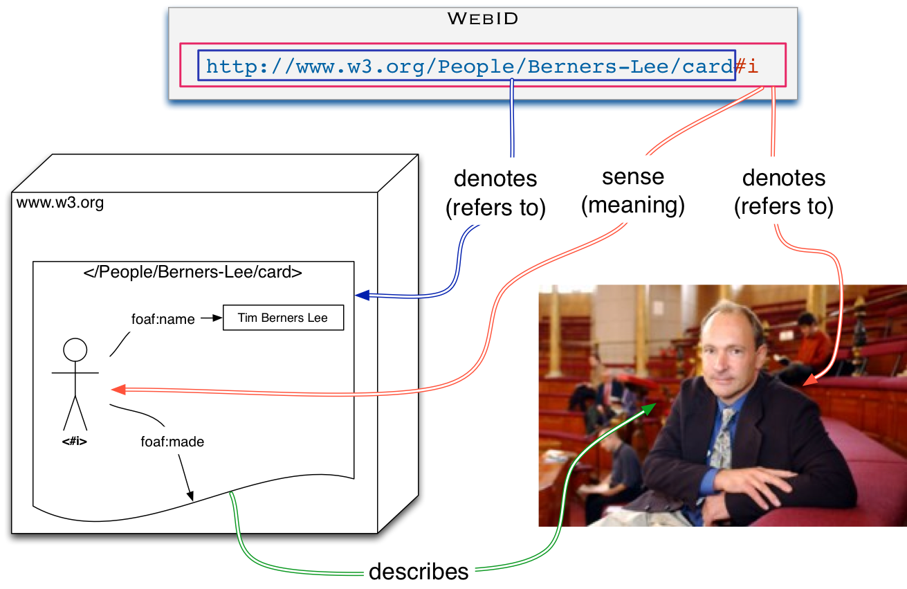

1. Introduction
This section is non-normative.
A WebID is an HTTP URI that refers to an Agent (Person, Organization, Group, Device, etc.). A description of the WebID can be found in the WebID Profile Document, a type of web page that would be familiar to any Social Network user.
A WebID Profile Document is a Web resource that MUST be available as text/turtle [TURTLE], but MAY be available in other RDF serialization
formats (e.g., [RDFA-CORE]) if requested through content negotiation.
WebIDs can be used to build a Web of trust using vocabularies such as FOAF [FOAF] by allowing people to link their profiles in a public or protected manner. Such a web of trust can then be used by a Service to make authorization decisions, by allowing access to resources depending on the properties of an agent, such as that they are known by some relevant people, employed at a given company, a member of a family or some other group, etc.
1.1. Outline
This specification is divided in the following sections.
This section gives a high level overview of WebID, and presents the organization of the specification and the conventions used throughout this document.
Section 2 provides a short description for the most commonly used terms in this document.
Section 3 describes what a WebID URI is.
Section 4 presents an overview of WebID.
Section 5 deals with the publishing of a WebID Profile Document.
Section 6 describes how a request for a WebID Profile Document should be handled.
2. Terminology
This section provides definitions for several important terms used in this document.
- Requesting Agent
-
The Requesting Agent initiates a request to a Service listening on a specific port using a given protocol on a given Server.
- Server
-
A Server is a physical or virtual machine, contactable at a domain name or IP address, that hosts Services which are accessible over the network.
- Service
-
A Service is an agent listening for requests at a particular domain name or IP address on a given Server.
- WebID
-
A WebID is a URI with an HTTP or HTTPS scheme that denotes an Agent (Person, Organization, Group, Device, etc.). For WebIDs with fragment identifiers (e.g.,
#me), the URI without the fragment denotes the WebID Profile Document. For WebIDs without fragment identifiers an HTTP request on the WebID MUST return a 303 with a Location header URI referring to the WebID Profile Document. - WebID Profile Document
-
A WebID Profile Document is an RDF document that uniquely describes the Agent denoted by the WebID in relation to that WebID. The server MUST provide a
text/turtle[TURTLE] representation of the requested profile. This document MAY be available in other RDF serialization formats, such as RDFa [RDFA-CORE], or [RDF-SYNTAX-GRAMMAR] if so requested through content negotiation.
2.1. Namespaces
Examples assume the following namespace prefix bindings unless otherwise stated:
| Prefix | IRI |
|---|---|
foaf
| http://xmlns.com/foaf/0.1/ |
3. The WebID HTTP URI
When using URIs, it is possible to identify both a thing (which may exist outside of the Web) and a Web document describing the thing. For example, the person Bob is described on his homepage. Alice may not like the look of Bob’s homepage, but may want to link to the person Bob. Therefore, two URIs are needed, one for Bob and one for Bob’s homepage (or an RDF document describing Bob).
The WebID HTTP URI must be one that dereferences to a document the user controls.
For example, if a user Bob controls https://bob.example.org/profile, then his
WebID can be https://bob.example.org/profile#me.
There are two solutions that meet our requirements for identifying real-world objects: 303 redirects and hash URIs. Which one to use depends on the situation. Both have advantages and disadvantages, as presented in [COOLURIS]. All examples in this specification will use such hash URIs.
4. Overview
This section is non-normative.
The relation between the WebID URI and the WebID Profile Document is illustrated below.

The WebID URI — "http://www.w3.org/People/Berners-Lee/card#i" (containing the #i hash tag) — is an identifier that denotes (refers to) a person or more generally an agent. In the above illustration, the referent is Tim Berners Lee, a real physical person who has a history, who invented the World Wide Web, and who directs the World Web Consortium.
The WebID Profile Document URI — "http://www.w3.org/People/Berners-Lee/card" (without the #i hash tag) — denotes the document describing the person (or more generally any agent) who is the referent of the WebID URI.
The WebID Profile Document gives the meaning of the WebID: its RDF Graph
contains a Concise Bounded Description of
the WebID such that this subgraph forms a definite description of the referent
of the WebID, that is, a description that distinguishes the referent of that
WebID from all other things in the world.
The WebID Profile Document
can, for example, contain relations to other documents depicting the WebID
referent, or it can relate the WebID to principals used by different
authentication protocols. (More information on WebID and other authentication
protocols can be found on the WebID Identity
Interoperability page).
5. Publishing the WebID Profile Document
WebID requires that servers MUST at least be able to provide Turtle representation of WebID Profile Documents, but other serialization formats of the graph are allowed, provided that agents are able to parse that serialization and obtain the graph automatically. HTTP Content Negotiation can be employed to aid in publication and discovery of multiple distinct serializations of the same graph at the same URL, as explained in [COOLURIS]
It is particularly useful to have one of the representations be in HTML even if it is not marked up in RDFa, as this allows people using a web browser to understand what the information at that URI represents.
5.1. WebID Profile Document Vocabulary
WebID RDF graphs are built using vocabularies identified by URIs, that can be placed in subject, predicate or object position of the relations constituting the graph. The definition of each URI should be found at the namespace of the URI, by dereferencing it.
5.1.1. Personal Information
This section is non-normative.
Personal details are the most common requirement when registering an account with a website. Some of these pieces of information include an e-mail address, a name and perhaps an avatar image, expressed using the FOAF [FOAF] vocabulary. This section includes properties that SHOULD be used when conveying key pieces of personal information but are NOT REQUIRED to be present in a WebID Profile Document:
- foaf:name
-
The name of the individual or agent.
- foaf:knows
-
The WebID URI of a known person.
- foaf:img
-
An image representing a person.
5.2. Publishing a WebID Profile using Turtle ##
{#publishing-a-webid-profile-using-turtle}This section is non-normative.
A widely used format for writing RDF graphs by hand is the Turtle [TURTLE] notation. It is easy to
learn, and very handy for communicating over e-mail and on mailing lists. The
syntax is very similar to the SPARQL query language. WebID Profile Documents in Turtle should be served with the text/turtle content type.
Take for example the WebID https://bob.example.org/profile#me, for which the WebID Profile Document contains the following Turtle representation:
@prefix foaf: <http://xmlns.com/foaf/0.1/> . <> a foaf : PersonalProfileDocument ; foaf : maker <#me> ; foaf : primaryTopic <#me> . <#me> a foaf : Person ; foaf : name "Bob" ; foaf : knows <https://example.edu/p/Alice#MSc> ; foaf : img <https://bob.example.org/picture.jpg> .
5.3. Publishing a WebID Profile Document using the RDFa HTML notation
This section is non-normative.
RDFa in HTML [RDFA-CORE] is a way to markup HTML with relations that have a well defined semantics and mapping to an RDF graph. There are many ways of writing out the above graph using RDFa in HTML. Here is just one example of what a WebID Profile Document could look like.
< div vocab = "http://xmlns.com/foaf/0.1/" about = "#me" typeof = "foaf:Person" > < p > My name is< span property = "name" > Bob</ span > and this is how I look like:< img property = "img" src = "https://bob.example.org/picture.jpg" title = "Bob" alt = "Bob" /></ p > < h2 > My Good Friends</ h2 > < ul > < li property = "knows" href = "https://example.edu/p/Alice#MSc" > Alice</ li > </ ul > </ div >
If a WebID provider would prefer not to mark up his WebID Profile Document in
HTML+RDFa, but just provide a human readable format for users in plain HTML and
have the RDF graph appear in a machine readable format such as Turtle, then he SHOULD provide a link of type alternate to a machine readable format [RFC5988]. This can be placed in the HTTP header or in the html as shown
here:
< html > < head > < link rel = "alternate" type = "text/turtle" href = "profile.ttl" /> </ head > < body > ...</ body > </ html >
5.4. Privacy
This section is non-normative.
A WebID Profile Document may contain public as well as private information about the agent identified by the WebID. As some agents may not want to reveal a lot of information about themselves, RDF and Linked Data principles allows them to choose how much information they wish to make publicly available. This can be achieved by separating parts of the profile information into separate documents, each protected by access control policies.
On the other hand, some agents may want to publish more information about themselves, but only to a select group of trusted agents. In the following example, Bob is limiting access to his list of friends, by placing all foaf:knows relations into a separate document.
@prefix foaf: <http://xmlns.com/foaf/0.1/> . @prefix rdfs: <http://www.w3.org/2000/01/rdf-schema#> . <> a foaf : PersonalProfileDocument ; foaf : maker <#me> ; foaf : primaryTopic <#me> . <#me> a foaf : Person ; foaf : name "Bob" ; rdfs : seeAlso <https://bob.example.org/friends> ; foaf : img <https://bob.example.org/picture.jpg> .
Where https://bob.example.org/friends is a reference to an Access Control List (ACL) protected document containing:
@prefix foaf: <http://xmlns.com/foaf/0.1/> . <> a foaf : PersonalProfileDocument ; foaf : maker <https://bob.example.org/profile#me> ; foaf : primaryTopic <https://bob.example.org/profile#me> . <https://bob.example.org/profile#me> a foaf : Person ; foaf : knows <https://example.edu/p/Alice#MSc> ; foaf : knows <https://example.com/people/Mary/card#me> .
and having the following corresponding ACL rule, expressed using the WebAccessControl ontology:
@prefix acl: <http://www.w3.org/ns/auth/acl#> . <#FriendsOnly> ; acl : accessTo <https://bob.example.org/friends> ; acl : agent <http://example.edu/p/Alice#Msc> , <http://example.com/people/Mary/card#me> ; acl : mode acl : Read .
5.5. Security Considerations
This section is non-normative.
A WebID identifies an agent via a description found in the associated WebID Profile Document. An agent that wishes to know what a WebID refers to, must rely on the description found in the WebID Profile. An attack on the relation between the WebID and the WebID Profile Document can thus be used to subvert the meaning of the WebID, and to make agents following links within the WebID Profile Document come to different conclusions from those intended by profile owners.
The standard way of overcoming such attacks is to rely on the cryptographic security protocols within the HTTPS [HTTP-TLS] stack. HTTPS servers are identified by a certificate either signed by a well known Certification Authority or whose public key is listed in the DNSSEC as specified by the DANE protocol [RFC6698], or both. This makes it much more difficult to set up a fake server by DNS Poisoning attacks. Resources served over HTTPS are furthermore signed and encrypted removing all the simple man-in-the-middle attacks. Applying the above security measure does not remove the burden from server administrators to take the appropriate security measures, in order to avoid compromising their servers. Similarly, clients that fetch documents on the web also need to make sure their work environment has not bee compromised.
As security is constantly being challenged by new attacks, to which new responses are found, a collection of security considerations will be made available on the WebID Wiki.
6. Processing the WebID Profile
The Requesting Agent needs to fetch the WebID Profile Document, if it does not have a valid one in cache. The Agent requesting the WebID Profile Document MUST be able to parse documents in Turtle [TURTLE], but MAY also be able to parse documents in RDF/XML [RDF-SYNTAX-GRAMMAR] and RDFa [RDFA-CORE]. The result of this processing should be a graph of RDF relations that is queryable, as explained in the next section.
It is recommended that the Requesting Agent sets a qvalue for text/turtle in the HTTP Accept-Header with a higher priority than in the
case of application/xhtml+xml or text/html, as sites may produce HTML
without RDFa markup but with a link to graph encoded in a pure RDF format
such as Turtle. For an agent that can parse Turtle, rdf/xml and RDFa, the
following would be a reasonable Accept header:
Accept: text/turtle,application/rdf+xml,application/xhtml+xml;q=0.8,text/html;q=0.7
If the Requesting Agent wishes to have the most up-to-date WebID Profile Document for an HTTP URL, it can use the HTTP cache control headers to get the latest versions.
7. Acknowledgments
This section is non-normative.
The following people have been instrumental in providing thoughts, feedback, reviews, criticism and input in the creation of this specification:
Stéphane Corlosquet, Erich Bremer, Kingsley Idehen, Ted Thibodeau, Alexandre Bertails, Thomas Bergwinkl.